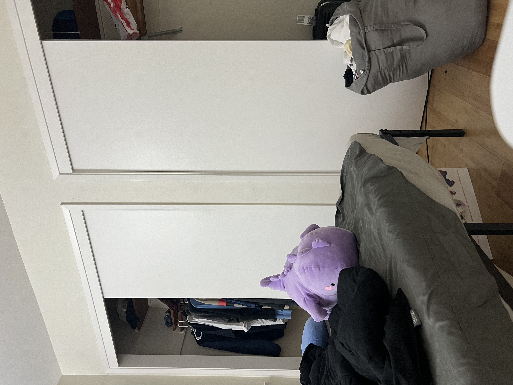
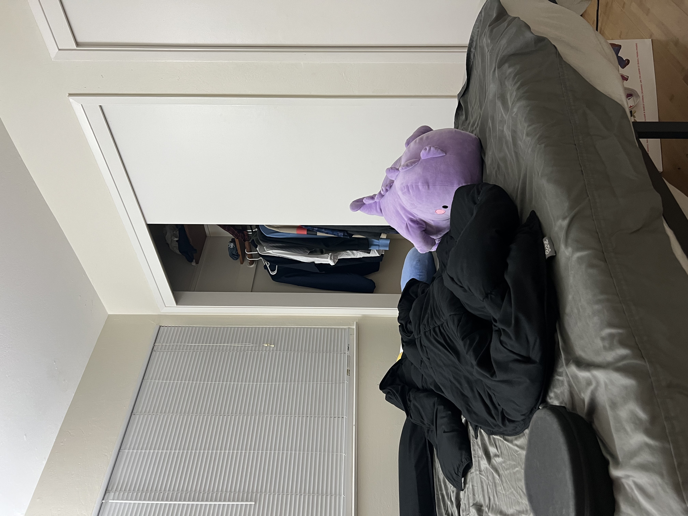
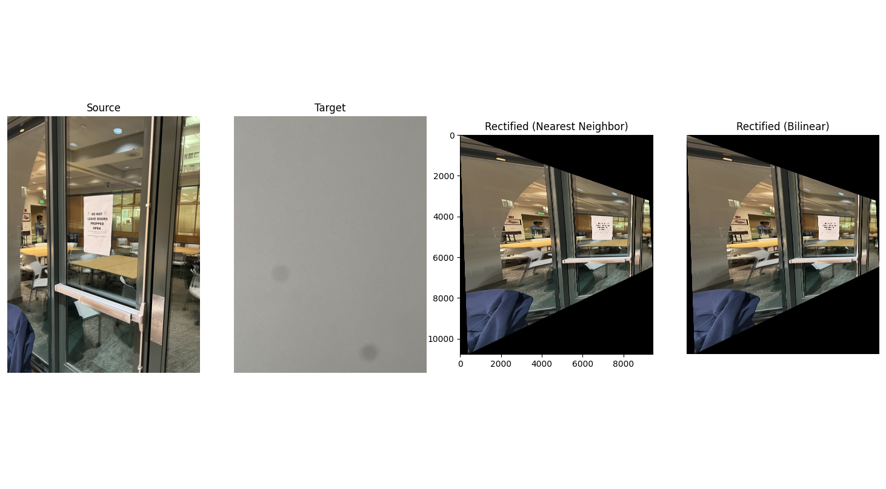
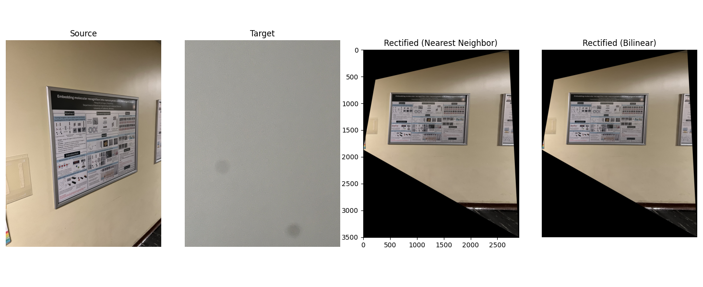
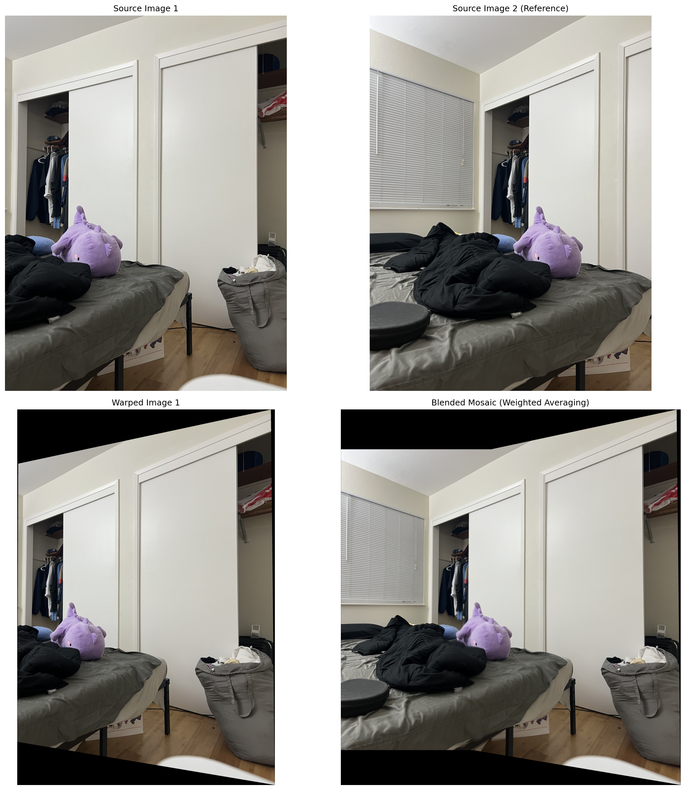
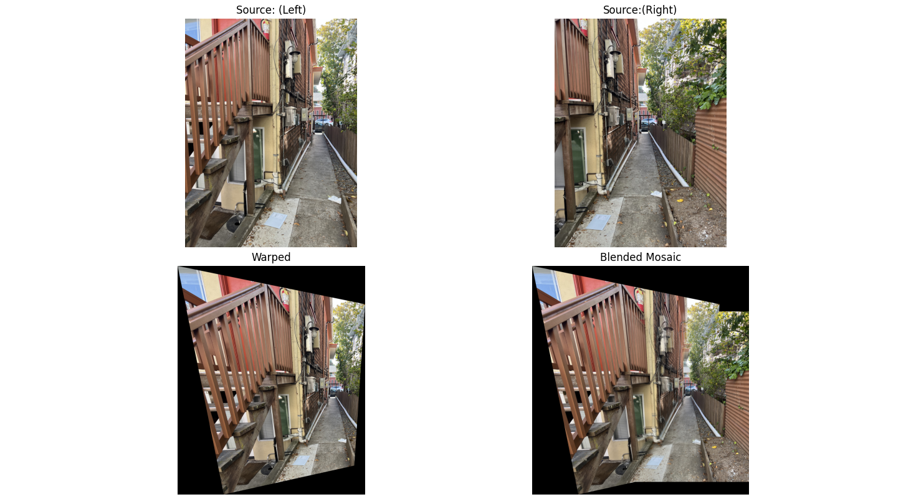
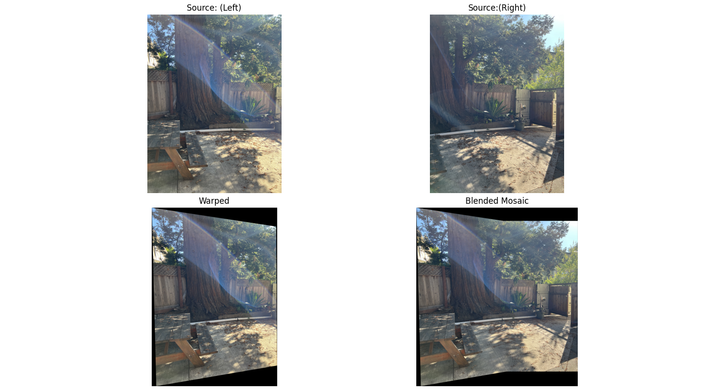

Project 3
[Auto]Stitching Photo Mosaics
Task A.1 - Shoot the Pictures
 


Task A.2 - Recover Homographies

Matrix A (Ah = 0, where h = [h11 h12 h13 h21 h22 h23 h31 h32 h33]^T):
[[-1.39569630e+02 -9.33170058e+02 -1.00000000e+00 0.00000000e+00 0.00000000e+00 0.00000000e+00 1.71209491e+05 1.14471587e+06 1.22669589e+03]
[ 0.00000000e+00 0.00000000e+00 0.00000000e+00 -1.39569630e+02 -9.33170058e+02 -1.00000000e+00 1.43017328e+05 9.56221552e+05 1.02470235e+03]
[-6.82661228e+02 -8.01973773e+02 -1.00000000e+00 0.00000000e+00 0.00000000e+00 0.00000000e+00 1.16650827e+06 1.37038548e+06 1.70876596e+03]
[ 0.00000000e+00 0.00000000e+00 0.00000000e+00 -6.82661228e+02 -8.01973773e+02 -1.00000000e+00 5.82884878e+05 6.84758948e+05 8.53842072e+02]
[-3.53144978e+02 -1.54033426e+03 -1.00000000e+00 0.00000000e+00 0.00000000e+00 0.00000000e+00 4.98927302e+05 2.17620203e+06 1.41281155e+03]
[ 0.00000000e+00 0.00000000e+00 0.00000000e+00 -3.53144978e+02 -1.54033426e+03 -1.00000000e+00 5.61200865e+05 2.44782448e+06 1.58915148e+03]
[-4.90443416e+02 -2.48311687e+03 -1.00000000e+00 0.00000000e+00 0.00000000e+00 0.00000000e+00 7.54255714e+05 3.81879953e+06 1.53790568e+03]
[ 0.00000000e+00 0.00000000e+00 0.00000000e+00 -4.90443416e+02 -2.48311687e+03 -1.00000000e+00 1.20735366e+06 6.11283612e+06 2.46175933e+03]
[-7.89448902e+02 -2.03765971e+03 -1.00000000e+00 0.00000000e+00 0.00000000e+00 0.00000000e+00 1.42365215e+06 3.67461227e+06 1.80334933e+03]
[ 0.00000000e+00 0.00000000e+00 0.00000000e+00 -7.89448902e+02 -2.03765971e+03 -1.00000000e+00 1.61826290e+06 4.17692533e+06 2.04986402e+03]
[-1.01217748e+03 -2.24818398e+03 -1.00000000e+00 0.00000000e+00 0.00000000e+00 0.00000000e+00 2.05075042e+06 4.55499589e+06 2.02607790e+03]
[ 0.00000000e+00 0.00000000e+00 0.00000000e+00 -1.01217748e+03 -2.24818398e+03 -1.00000000e+00 2.28482589e+06 5.07490937e+06 2.25733721e+03]
[-1.26236574e+03 -2.44650395e+03 -1.00000000e+00 0.00000000e+00 0.00000000e+00 0.00000000e+00 2.88888673e+06 5.59875205e+06 2.28847047e+03]
[ 0.00000000e+00 0.00000000e+00 0.00000000e+00 -1.26236574e+03 -2.44650395e+03 -1.00000000e+00 3.11534380e+06 6.03763287e+06 2.46786149e+03]
[-1.70477182e+03 -3.66388343e+03 -1.00000000e+00 0.00000000e+00 0.00000000e+00 0.00000000e+00 4.76995195e+06 1.02515467e+07 2.79800023e+03]
[ 0.00000000e+00 0.00000000e+00 0.00000000e+00 -1.70477182e+03 -3.66388343e+03 -1.00000000e+00 6.48534913e+06 1.39382661e+07 3.80423295e+03]]
Homography H (bed_1 -> bed_2):
[[ 7.07001780e-01 5.77427023e-03 1.10448621e+03]
[-1.93859586e-01 9.01784481e-01 2.05724961e+02]
[-9.82609649e-05 7.54762420e-07 1.00000000e+00]]
Task A.3 - Warp the Images
 The bilinear warping has better quality when zooming in, as the artifacts are much smoother. However, this method also takes longer, but usually only 1.1x the time. This makes bilinear seem superior over nearest neighbors in most scenarios, and this is what I use moving forward.
Task A.4 - Blend the Images into a Mosaic
  The procedure taken to create the image mosaic is as follows: we capture overlapping images from the same position while rotating the camera between shots. We select corresponding points between the images (by hand) and set up a system of equations. We solve this system using SVD to find the homography matrix H. We apply the homography transformation to map one image into the other image's coordinate system. We then use inverse warping to sample the pixel values to avoid gaps. We combine the warped images into a single mosaic, handling overlapping regions with weighted average with alpha masks.